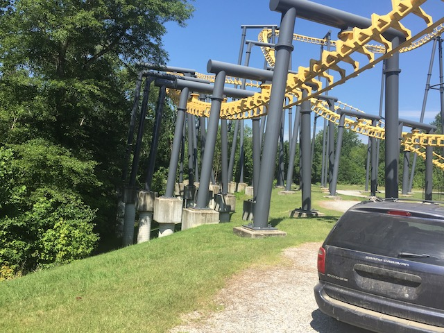

| |
Batwing Review

We're here at Six Flags America. Today's ride we'll be reviewing is Batwing. Once you strap yourself in, the ride gets into flying position, and away you go! You roll around a turn and then begin to climb the lifthill. Now during that turn, I would warn you. The sun is going to shine directly in your face and it will freaking blind you. But luckily, once you reach the lifthill, it's all good from there. Since you are climbing up the lifthill backwards, you can't see when you reach the top, which increases the levels of excitement you experience on the ride. Then suddenly, you start to level out and just see the sky, this means you are going backwards again. But don't worry about that. Then you simply just flip over, and are going forewords again. Now we've reached the B&M Flyer position. Then you move onto the first drop. The first drop is really good. It really makes it look like you're diving straight towards the ground. It also provides us with plenty of speed. Then we head straight into an overbanked turn. This is a really fun part of the ride and does make it seem like you're flying. Too bad your view sucks, but oh well. Still flying low to the ground, we then head straight into a big turn. So far, it's just a normal turn, but suddenly, we notice something weird. We're on our backs going backwards again. Yep. There's a half inline twist in this turn. So that provides us with some fun. Anyways, you then head down into one of the best parts of the ride. The Loop. Now while I will admit that I prefer Pretzal Loops to regular vertical loops on flying coasters, that real loops still kick ass and provide a different feel on a flying coaster than on a normal coaster. It sort of just has a weird feel to it that rocks. Anyways, we then head into another turnaround that flips us back on our stomachs facing foreword. We then head back towards the ground with plenty of speed. This just leads us to another turnaround that while doesn't flip us, is still very fun. But don't worry about the lack of flipping, for before you know it, it's off into a double inline twist for you!! This as always is lots of fun because inline twists are fun that way. After that bit of excitement, we just head straight into a downward helix. Now this certainly isn't an intense fake helix of death, but it's still fun, and actually kind of relaxing. Nothing special, just a fun helix. But unfortunetly, after that, we then have to later flip back on our backs and head into the brakes. So just how was Batwing? Well despite many people bitching and complaining about the Vekoma Flyers, I really liked them. Unfortunetly, they seem to be an endangered species. There weren't that many Vekoma Flyers to begin with, but Kings Island already got rid of Firehawk, and that makes me sad. And if Kings Island got rid of Firehawk, then it's probably safe to say that Nighthawk @ Carowinds is also in danger given that not only is Firehawk gone, but Cedar Fair has been REALLY eager to demolish old rides in the past few years (Finger crossed that Firehawk's death was all to make room for Orion). So yeah, that means that you really need to check out Batwing when visiting Six Flags America. I know the capacity on these things isn't very good, but hey! At least Six Flags America is never that busy. =P
8/10
Location: Six Flags America
Opened: 2001.
Built by: Vekoma
Last Ridden: July 22, 2019
I have ridden this exact same ride at the following parks.
Kings Island
Batwing Photos





Home
|